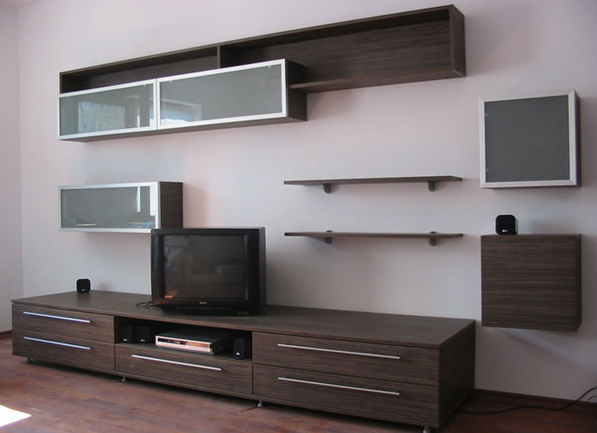

idei amenajare living | Adela Pârvu - Interior design blogger Sufragerie; Bucătărie; Baie; Camera copiilor; Classic Collection; Cumpărături sortate după produs. Cumpărături sortate după produs; Vizualizaţi tot; Perne și fețe de pernă; Aşternuturi pat; Decoraţiuni; Îmbrăcăminte de casă; Accesorii pentru baie și duș; Soluții de depozitare și organizatoare; Pături; Perdele; Covoare ...
Mobilă living - DEDEMAN - Dedicat planurilor tale Intr-o sufragerie cu proportii reduse, trebuie sa asezi o canapea mica. Pentru a te bucura de mai multa utilitate, alege una extensibila, cu doua locuri, care poate fi transformata cu usurinta, la nevoie, intr-un pat pentru oaspeti. Pentru un living spatios, achizitioneaza o canapea mai mare, de 3 locuri, joasa, care ofera o atmosfera moderna ...
Mobilier Sufragerie - Artmobel Alege mobilă pentru living și camera de zi: canapele, canapele extensibile, fotolii, fotolii tip puf, măsuțe de cafea, comode TV. Cumpără online pe JYSK.ro
Articole pentru Sufragerie| Miniprix DESCOPERĂ O GAMĂ VARIATĂ DE MOBILĂ PENTRU LIVING ȘI CAMERA DE ZI Îți oferim o gamă variată de mobilier pentru living și camera de zi - canapele, canapele extensibile, măsuțe de cafea, fotolii, tabureți, pufuri şi comode TV - în diverse stiluri și materiale care păstrează amprenta rădăcinilor noastre scandinave Fie că preferi un stil clasic, rustic sau unul modern, în ...
Dedeman Perdele si draperii - Decoratiuni - Dedicat ... Alege din sortimentul variat sufragerii sau livinguri. Poti avea cea mai frumoasa camera de zi sau o sufragerie unica, cu mobilier si măsuțe de cafea pentru living de calitate.
Mobilă living și sufragerie | FAVI.ro Camera de zi, Fotolii si Demi-fotolii, Scaune, Sufragerie. Taburet Sgabello Scaune, Sufragerie. Scaun Veneziana Eco cu Brate Scaune, Sufragerie. Scaun Veneziana Eco Scaune, Sufragerie. Scaun Veneziana cu Brate Scaune, Sufragerie. Scaun Veneziana Scaune, Sufragerie. Scaun Traforata cu Brate Scaune, Sufragerie. Scaun Traforata
Biblioteci Living » Modele Moderne pentru Sufragerie ... Este momentul să iei masa? Avem multe tipuri de mobilier pentru sufragerie din care poți alege. Vină să vezi seturi de masă, scaune și multe posibilități de combinare a acestora, indiferent de spațiul de care dispui.
Descoperă mobilă pentru living și camera de zi | JYSK.ro Sufragerie ANEMOS IISufragerie , pret redus 690 ron, tva inclus, pret initial 826 ron, tva inclus.Di..-4%. Sufragerie ANEMOS 3. 826RON 790RON. Sufragerie ANEMOS IIIDimensiuni corp suspendat si corp dreapta jos:Latime: 50 cmAdancime: 29 cmInalt.. SUFRAGERIE ATRIUM. 1.490RON
Sufragerie | H&M RO Carui tip de mobila pentru sufragerie anume sa dati prioritate - depinde de spatiul disponibil in apartament cit si de preferintele personale ale proprietarului. Exista mai multe forme, care va permit sa faceti interiorul unic si confortabil. Sa comandati mobila pentru living in Moldova puteti pe site-ul nostru.
Mobila Living / Sufragerii - Transport Gratuit, Livrare 4 ... Deși inițial, biblioteca era o piesă de mobilier concepută doar pentru cărți, noile designuri sunt adaptate la modul de viață al omului contemporan. Pe lângă rafturile deschise pentru etalarea cărților sau altor obiecte decorative, ea oferă și spații închise (tip vitrină sau dulap), sertare încăpătoare, dar și un spațiu liber, proiectat special pentru televizor.
Mobila living | Mobila sufragerie - Vezi Oferta - Elvila.ro
2020.09.19 21:42

0372.131.820 Contact Blog Cariere Informații investitori 0 0 RON Coșul este gol! Meniu Mobilier Mobila living Biblioteci Comode TV Masute Etajere Vitrine Bufete Polite Oglinzi living Seturi living Mobila dining Mese Scaune Mobila dormitor Paturi Dulapuri Comode Noptiere Oglinzi dormitor Seturi dormitoare Mobila bucatarie Camere copii Coltare de bucatarie Mobila hol Cuiere Pantofare Canapele Canapele extensibile Set canapele stofa si piele ecologica Canapele fixe Coltare Fotolii Taburete Saltele Saltele Relaxa cu arcuri Saltele din spuma cu memorie Toppere Mobilier Birou Ansambluri office Birouri office Dulapuri si etajere Birouri calculator copii Scaune de birou Mobila la comanda Decoratiuni Perne decorative Promoţii Mobilier Mobila living Biblioteci Comode TV Masute Etajere Vitrine Bufete Polite Oglinzi living Seturi living Mobila dining Mese Scaune Mobila dormitor Paturi Dulapuri Comode Noptiere Oglinzi dormitor Seturi dormitoare Mobila bucatarie Camere copii Coltare de bucatarie Mobila hol Cuiere Pantofare Decoratiuni Perne decorative Canapele Canapele extensibile Set canapele stofa si piele ecologica Canapele fixe Coltare Fotolii Taburete Saltele Saltele Relaxa cu arcuri Saltele din spuma cu memorie Toppere Mobilier Birou Ansambluri office Birouri office Dulapuri si etajere Birouri calculator copii Scaune de birou Mobila la comanda Promoţii Noutati Magazin mobila Mobilier Mobila living Categorii Promotie Mobilier + - Mobila living + - Biblioteci Comode TV Masute Etajere Vitrine Bufete Polite Oglinzi living Seturi living Mobila dining + - Mese Scaune Mobila dormitor + - Paturi Dulapuri Comode Noptiere Oglinzi dormitor Seturi dormitoare Mobila bucatarie Camere copii Coltare de bucatarie Mobila hol + - Cuiere Pantofare Canapele + - Canapele extensibile Set canapele stofa si piele ecologica Canapele fixe Coltare Fotolii Taburete Mobilier Birou + - Ansambluri office Birouri office Dulapuri si etajere Birouri calculator copii Scaune de birou Saltele + - Saltele Relaxa cu arcuri Saltele din spuma cu memorie Toppere Decoratiuni + - Perne decorative Cele mai vandute O privire rapida Corp mobil cu 4 sertare CM4S schoko ELVILA 479 RON Adaugă în Coş Adaugă in Wishlist Compară produsul O privire rapida Saltea ORTOPEDICA LUX Hermia - H 20 cm ELVILA 744 RON Adaugă în Coş Adaugă in Wishlist Compară produsul O privire rapida Birou BW 140 schoko ELVILA 316 RON Adaugă în Coş Adaugă in Wishlist Compară produsul O privire rapida Saltea CONFORT Hermia - H 22 cm ELVILA 586 RON Adaugă în Coş Adaugă in Wishlist Compară produsul OFERTA SPECIALA
Vizitează-ne !
Descoperă ofertele noastre în cel mai apropiat magazin ! Află mai multe
Newsletter
Afla primul care sunt noutatile
Mobila pentru living si sufragerie
Transforma-ti visele in realitate si mobileaza casa exact asa cum iti doresti. Indiferent ca preferi stilul retro, modern, elegant sau sofisticat, pe Elvila.ro vei gasi mobila sufragerie de foarte buna calitate, realizata de cei mai buni mesteri din Romania cu materiale riguros alese.
Alege din zecile de tipuri de mobila living sau mobila sufragerie pentru o casa cu personalitate care va fi admirata de fiecare oaspete.
Poti comanda mobilier living si mobila sufragerie din modelele pre-existente sau poti crea mobilier living dupa dimensiunile si caracteristicile pe care le doresti.
Compara, analizeaza si decide aici pe site sau mergand intr-unul din magazinele noastre .Ai la dispozitie showroom-uri Elvila in toata tara, dar poti gasi poze si informatii complete despre fiecare piesa de mobilier living si online. Indata ce te-ai hotarat poti comanda cu usurinta, iar daca ai intrebari, echipa de suport Elvila este gata sa te indrume catre cea mai buna alegere.
Profita de promotiile din fiecare saptamana si alege mobila living moderna la preturi extrem de avantajoase. Fie ca iti place mobila sufragerie Florenta, Britania sau Tudor, poti sa te bazezi pe calitatea exceptionala a materialelor si imbinarilor. Exploreaza chiar acum gama noastra de mobila living moderna si cocheta.
Cum sa obtii un aranjament de exceptie in camera de zi?
De obicei, mobila dintr-o sufragerie serveste mai multor activitati, si mai multor oameni. In anumite locuinte, mobila sufragerie este utilizata pentru adunarile familiale, in vreme ce in altele mobilierul din living nu este utilizat decat la ocazii speciale. In oricare din aceste imprejurari te-ai afla, un numar de chestiuni ies mereu la iveala atunci cand avem inainte un proiect in care cautam mobila sufragerie.
De aceea, speram sa gasesesti folositoare urmatoarele sfaturi pentru a alege mobila living moderna pentru locuinta ta.
Mobila sufragerie: cum sa alegem mobila living moderna?
Orice incapere moderna se supune unui set minim de reguli. Iata ce trebuie sa avem in considerare atunci alegem mobila living:
Stabileste ce piesa urmeaza sa devina punctul focal al incaperii, si selecteaza mobilier living in functie de optiunea facuta. In anumite incaperi, punctul focal va fi reprezentat de un element pre-existent, asa cum este un semineu, ori o fereastra mare. In unele case, acesta poate fi reprezentat si de masuta cu televizor; Mobilierul din living poate fi utilizat pentru a da nastere unor “zone de conversatie”: mobila living moderna trebuie sa ne ajute sa purtam conversatii dintr-o pozitie confortabila, fara a fi nevoie sa ridicam vocea ori sa intindem gatul. In cazul incaperilor de dimensiuni mari, exista posibilitatea de a crea mai multe astfel de spatii convesationale. Nu pierde din vedere traficul prin incapere. Atunci cand alegi mobilier living, retine importanta pe care il joaca spatiul liber. O sufragerie moderna sa pastreze un aspect aerisit si sa nu fie incarcata in mod excesiv. Nu este necesar sa lipesti mobila de pereti; a avea mobila din sufragerie cat mai apropiata de pereti este una din cele mai comune greseli de design. Atata vreme cat spatele pieselor are finisaj, nu este nici un motiv sa il ascunzi. In schimb, grupand aproape piesele vei obtine un aspect intim, compact, si vei castiga mai mult spatiu. Asa se prezinta mobila living moderna;
Despre marimi si dimensiuni.
Atunci cand vorbim despre mobilier living, marimea este importanta.
Canapeaua si scaunele sunt adesea elementele principale ce alcatuiesc mobila din sufragerie. De aceea, este important sa masori spatiul de care dispui inainte de a achizitiona aceste piese de mobilier living. In mod ideal, acestea nu trebuie sa fie nici prea mari, nici prea mici ca dimensiune.
Pentru cei care indragesc astfel de exercitii, ar fi util sa schitezi un plan al incaperii si sa incerci sa introduci diverse piese de mobilier. De exemplu, poti face mai multe incercari pentru a vedea in care parte a incaperii se potriveste cel mai bine coltarul/canapeaua.
Covorul- Covoarele reprezinta o modalitate ingenioasa si eficienta pentru a defini zonele unui living, iar principla eroare pe care oamenii o fac in aceasta materie este ca folosesc covorase prea mici.
Masuta de cafea- Masutele de cafea sunt piese de mobilier living cu valoare practica ridicata, care adesea se afla plasata in mijlocul zonelor confersationale din incapere. Lungimea unor astfel de masute ar trebui sa fie de aproximativ doua treimi din lungimea canapelei.
Daca nu doresti sa folosesti o masuta de cafea , poti incerca mai multe masute mici, sau bancute de dimensiuni reduse, pentru a obtine acelasi rezultate. Retine insa ca cei care se vor afla in jurul masutei trebuie sa se aplece asupra acesteia fara greutate, pentru a putea ajunge la obiecte.
Mobilier living modern, cu accesorii moderne
Odata ce mobila este instalata, ramane sa te gandesti la aspectul accesoriilor complementare. Este important pentru mobila living pe care ati ales-o sa fie compatibila cu diverse accesorii care vor desavarsi atmosfera spatiului de zi.
Alege mobilier living de calitate, fabricat in Romania, din oferta variata de mobila sufragerie de la Elvila. Descopera in catalogul Elvila mobila living moderna la preturi avantajoase, pentru sufragerii mai mici sau mai spatioase.
Subcategorii Biblioteci Comode TV Masute Etajere Vitrine Bufete Polite Oglinzi living Seturi living Produse pe pagină: 25 30 50 75 100 Sortare după: Implicit Nume (A - Z) Nume (Z - A) Preţ (Mic Mare) Preţ (Mare Mic) Model (A - Z) Model (Z - A) Comparare Produse (0) -10% NOU O privire rapida Biblioteca ENRIQUE alb ELVILA Biblioteca ENRIQUE Dimensiuni de gabarit: L 240 x A 42 x H 190 cm.Dimensiuni pe componente: Corp baza 2 usi 1 nisa cu polita: L 180 x A 34 x H 43 cm.Corp baza stanga : L 60 x A 35 x H 105 cm.Corp suspendat dreapta : L.. 1190 RON 1071 RON Fără TVA: 900 RON Adaugă în Coş Adaugă in Wishlist Compară produsul NOU O privire rapida Comoda 2U LEONARDO Comoda 2U LEONARDODimensiuni de gabarit: L107 x A42 X H 124 cmDescriere: Comoda este realizata din PAL de 16 mm. Se livreaza demontat.Tip material: PAL melaminatFinisaj: Stejar riviera/alb.. 2178 RON Fără TVA: 1830.25 RON Adaugă în Coş Adaugă in Wishlist Compară produsul NOU O privire rapida Comoda cu sticla INFINITY I-08 Comoda cu sticla INFINITY I-08Dimensiuni de gabarit: L137 x A42 X H 122 cmDescriere: Comoda cu sticla este realizata din PAL de 16 mm, are elemente din PAL pana la 48mm grosime si manere metalice. Se livreaza demontat.. 1721 RON Fără TVA: 1446.22 RON Adaugă în Coş Adaugă in Wishlist Compară produsul -10% O privire rapida Corp suspendat TARA C24 nuc ELVILA * Produsul este disponibil la pretul promotional de 273 lei.* Stocul este limitat!Detalii ale produsului din imagine: Corp suspendat TARA C24Dimensiuni de gabarit: L 194 x A 28 x H 36 cm. Produsul este realizat din PAL melaminat de 18 mm, &.. 303 RON 273 RON Fără TVA: 229.41 RON Adaugă în Coş Adaugă in Wishlist Compară produsul NOU O privire rapida Etajera dreapta LEONARDO Etajera dreapta LEONARDO Dimensiuni de gabarit: L60 x A42 X H 198.5 cmDescriere: Etajeră cu un design modern din PAL de 16 mm. Se livreaza demontat.Tip material: PALFinisaj: Stejar riviera/alb extra lucios HG.. 759 RON Fără TVA: 637.82 RON Adaugă în Coş Adaugă in Wishlist Compară produsul O privire rapida Etajera multifunctionala HARUN Etajera multifunctionala HARUN Dimensiuni de gabarit: L60 x A33 X H 86 cmDescriere: Etajeră multifuncţională cu un design modern din MDF/bambus de 15 mm. Se livreaza demontat.Tip material: MDF/bambusFinisaj: Gri/alb/bambus.. 231 RON Fără TVA: 194.12 RON Adaugă în Coş Adaugă in Wishlist Compară produsul NOU O privire rapida Etajera stanga LEONARDO Etajera stanga LEONARDO Dimensiuni de gabarit: L60 x A42 X H 198.5 cmDescriere: Etajeră cu un design modern din PAL de 16 mm. Se livreaza demontat.Tip material: PALFinisaj: Stejar riviera/alb extra lucios HG.. 759 RON Fără TVA: 637.82 RON Adaugă în Coş Adaugă in Wishlist Compară produsul NOU O privire rapida Living OBSESSION Living OBSESSIONDimensiuni de gabarit: L 300 xA50 x H 198 cm Componenta: Dulap 2 uși bara haine (LxlxH): 90x50x198 cmVitrina cu LED(LxlxH): 45x40x154 cmSoldat polite (LxlxH): 45x40x198 cmCorp Inferior (LxlxH): 165x50x45 cmSuport TV (LxlxH): 98x37x14 .. 3069 RON Fără TVA: 2578.99 RON Adaugă în Coş Adaugă in Wishlist Compară produsul O privire rapida Raft bambus TUSUM Raft bambus TUSUM Dimensiuni de gabarit: L98 x A132 X H 28 cmDescriere: Raft cu un design modern din bambus lacuit cu 6 polite. Capacitatea de sustinere este de max 5kg pe raft. Se livreaza demontat.Observatii: Nu este potrivit p.. 391 RON Fără TVA: 328.57 RON Adaugă în Coş Adaugă in Wishlist Compară produsul NOU O privire rapida Rama cu oglinda sufragerie TUDOR crem ELVILA Rama cu oglinda sufragerie TUDOR cremDimensiuni: L 191,5 x A 11,5 x H 91,4 cm.Produsul este realizat din cherestea de fag si PAL furniruit cu furnir de fag, placaj de fag si oglinda.Tip material: PAL furniruit cu furnir de fag, elemente de lemn masiv.. 1112 RON Fără TVA: 934.45 RON Adaugă în Coş Adaugă in Wishlist Compară produsul NOU O privire rapida Vitrina INFINITY I-04 Vitrina INFINITY I-04Dimensiuni de gabarit: L56 x A42 X H 192 cmDescriere: Vitrina face parte din ansamblul de mobilier modular de lux potrivită pentru amenajarea dormitoarelor şi holurilor, Produsul este realizat din PAL melaminat de 16mm.. 1392 RON Fără TVA: 1169.75 RON Adaugă în Coş Adaugă in Wishlist Compară produsul NOU O privire rapida Vitrina INFINITY I-05 Vitrina INFINITY I-05Dimensiuni de gabarit: L96 x A42 X H 192 cmDescriere: Vitrina face parte din ansamblul de mobilier modular de lux potrivită pentru amenajarea dormitoarelor şi holurilor, Produsul este realizat din PAL melaminat de 16mm.. 1491 RON Fără TVA: 1252.94 RON Adaugă în Coş Adaugă in Wishlist Compară produsul O privire rapida Corp suspendat TARA C23 nuc ELVILA Detalii ale produsului din imagine: Corp suspendat TARA C23 Dimensiuni de gabarit: L 145.5 x A 18.2 x H 36 cm. Produsul este realizat din PAL melaminat de 18 mm, PFL de 3,2 mm. Tip de material: PAL melaminat.Finisaj: Nuc... 248 RON Fără TVA: 208.4 RON Adaugă în Coş Adaugă in Wishlist Compară produsul NOU O privire rapida Polita 1 LEONARDO sonoma + alb ELVILA Polita 1 LEONARDO LYOP01 Dimensiuni de gabarit: L 120 x A 20 x H 25 cm. Produsul este realizat .. 287 RON Fără TVA: 241.18 RON Adaugă în Coş Adaugă in Wishlist Compară produsul NOU O privire rapida Polita 2 LEONARDO sonoma + alb ELVILA Polita 2 LEONARDO LYOP03 Dimensiuni de gabarit: L 130 x A 20 x H 28 cm. Produsul este realizat .. 293 RON Fără TVA: 246.22 RON Adaugă în Coş Adaugă in Wishlist Compară produsul NOU O privire rapida Masuta de cafea NANCER ELVILA Masuta de cafea NANCER Dimensiuni de gabarit: D 40 * H 48 cm.Masuta este realizata in constructie demontabila, din PAL melaminat si metal.Tip material: PAL melaminat si picior metalic.Culoare: Alb cu negru... 160 RON Fără TVA: 134.45 RON Adaugă în Coş Adaugă in Wishlist Compară produsul NOU O privire rapida Masuta de cafea NANCER alb ELVILA Masuta de cafea NANCERDimensiuni de gabarit: D 40 * H 48 cm.Masuta este realizata in constructie demontabila, din PAL melaminat si metal.Tip material: PAL melaminat si picior metalic.Culoare: Alb cu sonoma... 160 RON Fără TVA: 134.45 RON Adaugă în Coş Adaugă in Wishlist Compară produsul NOU O privire rapida Masuta de cafea MC 98 ELVILA Masuta de cafea MC98Dimensiuni de gabarit: L 120 x A 60 x H 45 cm.Masuta este realizata in constructie nedemontabila din Pal furniruit. Tip material: Pal furniruit.Finisaj: Alb... 391 RON Fără TVA: 328.57 RON Adaugă în Coş Adaugă in Wishlist Compară produsul -10% NOU O privire rapida Masuta de cafea cu sertar TARA wenge ELVILA Masuta cu sertar TARA wengeDimensiuni de gabarit:L 125 x A 65.4 x H 35 cm.Masuta este realizata in constructie nedemontabila din PAL melaminat de 18mm si este prevazuta cu sertar.Tip material: PAL melaminat.Finisaj:Wenge.Termen de executie comanda 45.. 580 RON 522 RON Fără TVA: 438.66 RON Adaugă în Coş Adaugă in Wishlist Compară produsul -41% O privire rapida Masuta de cafea TARA cu sertar nuc + alb ELVILA * Stocul este limitat!Masuta de cafea cu sertar TARADimensiuni de gabarit: L 125 x A 65,4 x H35 cm.Masuta este realizata in constructie nedemontabila din PAL melaminat de 18mm. Este prevazuta cu sertar.Observati* Masuta se executa si in variant.. 526 RON 311 RON Fără TVA: 261.34 RON Adaugă în Coş Adaugă in Wishlist Compară produsul -10% O privire rapida Biblioteca CALIPSO sonoma ELVILA * Produsul este disponibil la pretul promotional de 1848 lei.* Stocul este limitat!Detalii ale produsului din imagine: Biblioteca CALIPSO sonomaDimensiuni de gabarit: L 303.6 x A 45 x H 190 cm. Produsul este realizat din PAL melaminat de 18.. 2053 RON 1848 RON Fără TVA: 1552.94 RON Adaugă în Coş Adaugă in Wishlist Compară produsul -20% O privire rapida Biblioteca CALIPSO wenge ELVILA * Stocul este limitat!Detalii ale produsului din imagine: Biblioteca CALIPSO wengeDimensiuni de gabarit: L 303.6 x A 45 x H 190 cm. Produsul este realizat din PAL melaminat de 18 mm, PFL de 3,2 mm, balamale, sine de glisare, geam. Bibliotec.. 2278 RON 1822 RON Fără TVA: 1531.09 RON Adaugă în Coş Adaugă in Wishlist Compară produsul -24% O privire rapida Biblioteca TARA 10 stejar 1180 + alb ELVILA * Produsul este disponibil la pretul promotional de 1692 lei. * Stocul este limitat!Detalii ale produsului din imagine: Biblioteca TARA 10 stejar 1180 + albDimensiuni de gabarit: L 298 x A 58 x H 200 cm.Produsul este realizat din PAL melami.. 2214 RON 1692 RON Fără TVA: 1421.85 RON Adaugă în Coş Adaugă in Wishlist Compară produsul O privire rapida Biblioteca ELITE crem ELVILA Biblioteca ELITE cremDimensiuni de gabarit: L 270 x A 46 x H 190 cmDimensiuni pe componente:Vitrina 1 usa plina si 1 usa sticla2 bucati: L 59.4 x A 39 x H 190 cm/bucata;Comoda TV: L 149.8 x A 46 x H 66.2 cm.Biblioteca are in componenta 2 vitrin.. 4852 RON Fără TVA: 4077.31 RON Adaugă în Coş Adaugă in Wishlist Compară produsul O privire rapida Comoda TV CALIPSO wenge ELVILA Comoda TV CALIPSODimensiuni de gabarit:L172 x A45 x H52 cm.Produsul este realizat din PAL melaminat de 18 mm, PFL de 3,2 mm, balamale, sine de glisare. Comoda se realizeaza in constructie nedemontabila.Tip material: PAL melaminat.Finisaj: Wenge... 601 RON Fără TVA: 505.04 RON Adaugă în Coş Adaugă in Wishlist Compară produsul O privire rapida Masuta de cafea TARA schoko ELVILA Masuta de cafea TARA schokoDimensiuni de gabarit: L 125 x A 65 x H 35 cmMasuta este realizata in constructie fixa, din PAL melminat.Tip material: PAL meleminat.Culoare: Schoko.Termenul de livrare este 30 de zile... 438 RON Fără TVA: 368.07 RON Adaugă în Coş Adaugă in Wishlist Compară produsul -61% O privire rapida Rama cu oglinda FIORE ELVILA * Produsul este disponibil la pretul promotional de 350 lei * Stocul este limitat! Rama cu oglinda sufragerie FIOREDimensiuni de gabarit: L 152 x A 7 x H 87 cmProdusul este realizat din PAL furniruit cu furnir de fag, cu elemente de lemn .. 903 RON 350 RON Fără TVA: 294.12 RON Adaugă în Coş Adaugă in Wishlist Compară produsul -10% O privire rapida Rama cu oglinda FLORENTA ELVILA * Produsul este disponibil la pretul promotional de 504 lei * Stocul este limitat! Detalii ale produsului din imagine: Rama cu oglinda FLORENTADimensiuni de gabarit: L 140 x A 8.5 x H78 cmProdusul este realizat din P.. 560 RON 504 RON Fără TVA: 423.53 RON Adaugă în Coş Adaugă in Wishlist Compară produsul -10% O privire rapida Rama oglinda TORRA AS 42-1 ELVILA * Produsul pe finisaj AS42-1 (maro) este disponibil la pretul promotional de 696 lei * Stocul este limitat!Detalii ale produsului din imagine: Rama oglinda TORRA AS 42-1Dimensiuni de gabarit: L 180 x A 1,8x H 70 cm.Produsul este.. 773 RON 696 RON Fără TVA: 584.87 RON Adaugă în Coş Adaugă in Wishlist Compară produsul -20% O privire rapida Biblioteca TARA 9 wenge ELVILA Biblioteca TARA 9 wengeDimensiuni de gabarit: L 346 x A 58 x H 200 cm. Produsul este realizat din PAL melaminat de 18 mm, PFL de 3,2 mm, balamale, sine de glisare, manere tragatoare. Biblioteca este compusa dintr-un dulap cu doua usi C12, o eta.. 2999 RON 2399 RON Fără TVA: 2015.97 RON Adaugă în Coş Adaugă in Wishlist Compară produsul Afişare 1 - 30 din 165 (6 pagini) 1 2 3 4 5 6 | Facebook Rămâi conectat Cele mai recente articole
Indispensabile pentru începerea școlii: piese de mobilier și accesorii recomandate de ELVILA
Noutățile începutului de toamnă la Elvila
Cele mai populare produse ELVILA din 2020
Piese de efect pentru amenajarea noii tale locuințe
Idei inspirate pentru amenajarea camerei copilului
Noutățile verii 2020 la Elvila
Inspirație marca Elvila pentru amenajarea locuinței în stil maritim
Mobilierul tău preferat, la reducere! Cât e vara de lungă!
Cum să-ți mobilezi cu mult bun-gust locuința, fără să cheltuiești prea mult
Propuneri locative marca Elvila pentru desfășurarea optimă a lucrului de acasă
Cadouri inspirate pentru femeile speciale din viața ta - propuneri marca Elvila
Primăvară plină de noutăți în portofoliul Elvila
Reduceri masive de început de primăvară la tot portofoliul de produse Elvila
Ospețe memorabile doar în jurul seturilor de dining marca Elvila
Maserati-o stofă specială din colecţia Elvila
Noutăţi de iarnă în portofoliul de produse Elvila
Continuă aventura promoțiilor de -50% alături de ELVILA! AU MAI RĂMAS 12 ZILE!
Plin sezon al campaniei de reduceri de 50% marca Elvila
Aventura promoţiilor continuă - secţiunea fotolii tapiţate
Elvila dă startul unei campanii hibernale de reduceri semnificative, la o multitudine de produse
Piese de mobilier din lemn masiv - o alegere inspirată pentru interioare dominate de calitate
Surse de inspiraţie pentru amenajarea unei locuinţe magice -propuneri marca Elvila
Sezonul cadourilor – piese de mobilier marca Elvila pe care să le oferi în dar
Festivalul preţurilor mici continuă la Elvila
Depozitarea în locuință - propuneri marca Elvila
Elvila sărbătoreşte cea mai neagră lună din an cu o mulţime de reduceri
Canapelele din piele naturală-sinonimul rafinamentului desăvârşit din spaţiile de relaxare
Măsuţa de cafea sau îmbinarea utilului cu esteticul în living
Fotoliul – produs iconic din portofoliul Elvila
Patul – cum să-l alegi pe cel mai potrivit pentru tine
Dressing-uri apreciate din portofoliul Elvila pentru dormitor şi hol
Colţare extensibile apreciate din colectia Elvila, cu şezut pe arcuri
Cuiere de calitate pentru holuri amenajate cu stil
Colţare viu-colorate pentru mai multă bună dispoziţie în bucătărie
Dormitoare în stil modern pentru interioare pline de stil
Canapele cu extensii de dormit noapte de noapte
Saltelele Relaxa Original – produse-emblemă din portofoliul Elvila ale unui brand cu tradiţie
Mese şi scaune pentru living-uri cu personalitate
Canapele în culori vesele pentru un living atrăgător tot timpul anului
Modele deosebite de dormitoare cu dressing-uri, cu care să-ţi impresionezi oaspeţii
Piese de mobilier ideale pentru amenajarea locuinţei în stil modern
Piese de mobilier marca ELVILA pentru un living primitor
Colţare de bucătărie marca Elvila pentru stiluri variate de amenajare
Recomandări de canapele cu extensii deosebite marca ELVILA
Camere de tineret în colecţia Elvila
Produse în stil clasic în colecţia ELVILA
Piese de mobilier de la Elvila în culoarea anului 2019 - CORAL
Invaţă cum să alegi un dulap potrivit pentru dormitorul tău
Biblioteca, accesoriul indispensabil din living
Idei de amenajare a locuintei in culori de primavara
Serviciu nou de amenajare de la Elvila - mobilierul la comandă
Cum creezi impresia unei locuințe mai luminoase și spațioase cu ajutorul oglinzilor
Cele mai bune trucuri pentru a curăța mobila din lemn, PAL sau MDF
Idei pentru decorarea și amenajarea casei în funcție de sezon
Crăciunița: sfaturi de îngrijire pentru a avea o plantă frumoasă și sănătoasă
Cum poți folosi culorile puternice pentru a-ți amenaja locuința
Amenajarea locuinței în stil clasic: recomandări și idei ca să creezi un spațiu elegant și funcțional
Stilul provensal: idei și recomandări de amenajare pentru o casă ca în sudul Franței
Cum să amenajezi un dining stilat în orice locuință
De ce trebuie sa tii cont cand alegi perdelele: incapere, material si culoare
Canapea sau coltar? 6 reguli care te ajuta sa-ti optimizezi spatiul din living
Cum poti sa amenajezi livingul in nuante albastre - ghid cu sfaturi practice si idei care sa te inspire
Amenajari interioare in stil industrial: simplitate si functionalitate pentru orice incapere
Amenajarea camerei de oaspeti. Idei pentru a o face practica si placuta
Amenajarea locuintei in stil scandinav: simplitate, confort si functionalitate
Amenajarea minimalista. Principiile acestui stil de design si inspiratie pentru casa ta
Amenajare feng-shui. Cum sa inviti norocul si energia pozitiva in casa ta
30 de idei inspirationale de cadouri de casa noua pe care oricine si le-ar dori
Stilul shabby chic in locuinta: accente romantice si culori feminine
Trucuri pentru curatarea canapelei si a mobilierului tapitat
Totul despre intretinerea si reconditionarea parchetului. Sfaturi si solutii practice
Idei pentru crearea unui perete accent. Modele care sa te inspire in reamenajarea casei
Decor in nonculori: cum sa folosesti combinatia alb-negru in amenajarile interioare
Top 15 cele mai usor de cultivat si ingrijit plante aromatice
Remedii infailibile pentru inlaturarea mirosurilor neplacute din locuinta
Alegerea covorului potrivit pentru fiecare camera - Modele, materiale si nivelul de rezistenta
GHID PRACTIC. Cum amenajezi casa de vacanta. Stiluri de design potrivite
5 recomandari ale designerilor de interior pentru anul 2018
GHID PRACTIC. Trucuri pentru reconditionarea si restaurarea pieselor vechi de mobilier
Cum si unde poate fi amenajat un dressing. Peste 11 idei care sa te inspire
Cum amenajam casa in spiritul Sarbatorilor de iarna
10 plante care rezista fara multa lumina. Pot infrumuseta si cele mai intunecate camere
Plante rezistente la umezeala, pe care le poti pastra in baie
Cum alegi corpurile de iluminat in functie de camera
GALERIE FOTO: 50+ SOLUTII DE DEPOZITARE SI ORGANIZAREA EFICIENTA A SPATIULUI
Regulile de aur in amenajarea garsonierei
CUM POTI SA CURETI SALTEAUA CU SOLUTII PREPARATE IN CASA
Cum sa alegi corect scaunul de birou. Criterii de care sa tii cont
Pereti veseli - culori/stickere/picturi pe pereti
Idei ingenioase pentru amenajarea unui hol prietenos
Amenajarea baii – idei si inspiratie
Cum sa ai un dormitor organizat
Tapetul – idei si sfaturi. Cum il folosesti in amenajarea casei
Amenajarea camerei copilului
Amenajarea mansardei - idei de utilizare a spatiului
Cum asortezi mobila wenge. Trucuri pentru a te bucura cu adevarat de frumusetea ei clasica
Idei practice pentru amenajarea balconului. Cum sa-ti creezi propriul colt de rai in apartament
5 tipuri de mobilier care te ajuta sa economisesti mult spatiu intr-un apartament mic
3 moduri prin care iti poti uimi musafirii atunci cand mobila este alba
Amenajarea unui dormitor mic de bloc: Idei | Galerie
Amenajarea Bucatariei: Idei si sfaturi pentru o bucatarie moderna
Amenajarea holului de la intrare: Solutii si inspiratie pentru un decor deosebit
Amenajarea livingului: Idei si sfaturi - simplu sau cu bucatarie open space
De ce mobilierul este cel mai important atunci cand (re)decorezi locuinta?
Mobila din PAL sau din lemn masiv? Care sunt avantajele si dezavantajele fiecarei variante
5 metode simple și ieftine pentru a personaliza o locuință nouă
Ghidul decorării casei pentru începători. Sfaturi esențiale de la profesioniști, pentru un decor de revistă
5 trenduri superbe pentru amenajarea dormitorului, pe care designerii le vor adopta in 2017
5 trucuri cunoscute doar de designeri pentru amenajarea unui living confortabil si relaxant
5 trucuri vizuale pentru a crea un design spectaculos în casa ta. Detaliile fac diferența
5 mituri pe care le-ai crezut adevarate pana acum despre amenajarea locuintei
6 sfaturi utile pentru ca renovarea bucatariei sa fie un succes garantat
10 semne ca bucataria ta are nevoie de o renovare completa
5 trucuri de amenajare. Cum faci ca locuinta ta sa para mai spatioasa
4 trucuri de organizare a spațiului de lucru care cresc productivitatea la locul de muncă
Cum ingrijesti corect mobila. Tot ce trebuie sa stii despre curatarea si intretinerea ei
Cum iti afecteaza mobila starea de spirit si ce stiu designerii de succes
5 trucuri pentru ingrijirea canapelei. Va rezista ani la rand si va arata ca noua
Tot ce ai vrea sa stii despre saltelele Relaxa, produse in Romania inca din anii ‘70
Ghid practic. Cum sa alegi canapeaua cea mai buna pentru tine
8 sfaturi utile. Cum alegi mobila potrivita pentru un apartament de mici dimensiuni
5 sfaturi pretioase pentru a alege mobila de bucatarie perfecta
Scurt ghid practic. Cum alegi culoarea canapelei pentru livingul tau